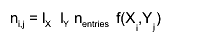
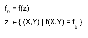
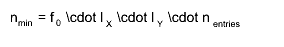
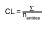
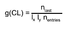
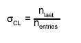

class KQContour
KQContour.cxx KDataStructure Author: Daniel Wegner <mailto:Daniel.Wegner@student.kit.edu> on 4/28/11. * Copyright 2011 Karlsruhe Institute of Technology. All rights reserved. This class is used to evaluate the function value of the two-dimensional propability density function g(E_recoil,Q) describing the distribution of (E_recoil,Q), (documentation in ~/doc/ERecoilQDistribution.pdf) so that the region where values are higher than this value is the confidence region for a specific confidence level.
Function Members (Methods)
public:
| KQContour(const KQContour&) | |
| KQContour(TF2* aFunction = 0, Double_t aNumBinsX = 1000, Double_t aNumBinsY = 1000, Double_t aNumEntries = 100000000) | |
| ~KQContour() | |
| static TClass* | Class() |
| Double_t | EvaluateConfidence(Double_t* x, Double_t* p) |
| Double_t | GetConfidence(Double_t aValue) |
| Double_t | GetConfidenceLevel() const |
| Double_t | GetConfidenceLevelError() const |
| Double_t | GetContour(Double_t aConfidenceLevel) |
| TH2D* | GetContourHistogram(Double_t aConfidenceLevel) |
| TF2* | GetFunction() |
| TH2D* | GetHistogram() |
| Int_t | GetNumBinsX() const |
| Int_t | GetNumBinsY() const |
| Int_t | GetNumEntries() const |
| virtual TClass* | IsA() const |
| KQContour& | operator=(const KQContour&) |
| void | SetFunction(TF2* aFunction) |
| void | SetNumBinsX(Double_t aNumBinsX) |
| void | SetNumBinsY(Double_t aNumBinsY) |
| void | SetNumEntries(Double_t aNumEntries) |
| virtual void | ShowMembers(TMemberInspector&) |
| virtual void | Streamer(TBuffer&) |
| void | StreamerNVirtual(TBuffer& ClassDef_StreamerNVirtual_b) |
private:
| void | RefillHistogram() |
Data Members
private:
| vector<KQBinRecord> | fBins | list of KQBinRecords sorted in descending |
| Double_t | fConfidenceLevel | confidence level |
| Double_t | fConfidenceLevelError | uncertainty on the confidence level |
| TF2* | fFunction | function describing the distribution the histogram is |
| TH2D* | fHistogram | histogram |
| Int_t | fNumBinsX | number of bins on the X axis |
| Int_t | fNumBinsY | number of bins on the Y axis |
| Int_t | fNumEntries | number of total entries |
Class Charts
| Inheritance Chart: | |||||
|
Function documentation
KQContour(TF2* aFunction = 0, Double_t aNumBinsX = 1000, Double_t aNumBinsY = 1000, Double_t aNumEntries = 100000000)
This constructor creates a histogram and fills it with the expected
numbers for each bin according the the specified
function f(X,Y), expediently the propability density function
g(E_recoil,Q)
The bin contents

with corresponding indices i and j
are then sorted in a list of KQBinRecords
void RefillHistogram()
This method refills the histogram the same way the constructor does (if the properties of the histogram or the function has changed)
Double_t GetConfidence(Double_t aValue)
This method gets the confidence level for a specific function value  The bin contents of the sorted list of KQBinRecords are successively summed from highest bin content to decreasing bin contents until the bin contents fall below 
Double_t EvaluateConfidence(Double_t* x, Double_t* p)
Double_t GetContour(Double_t aConfidenceLevel)
This method gets the function value for a specified confidence level This is done by summing the bin contents of the sorted list of KQBinRecords starting from the bin with highest bin content and proceeding with bins with decreasing bin content until the specified confidence level is reached  Then the function value is given by quotient of the most recently added bin content and the bin widths and number of total entries of the histogram  The uncertainty on the confidence level is then set to 
TH2D* GetContourHistogram(Double_t aConfidenceLevel)
This method gets a histogram representing the confidence region for the specified confidence level It has bin content 1 for bins in the confidence region and 0 else
KQContour(TF2* aFunction = 0, Double_t aNumBinsX = 1000, Double_t aNumBinsY = 1000, Double_t aNumEntries = 100000000)
void SetNumBinsX(Double_t aNumBinsX)
void SetNumBinsY(Double_t aNumBinsY)
void SetNumEntries(Double_t aNumEntries)
void SetFunction(TF2* aFunction)